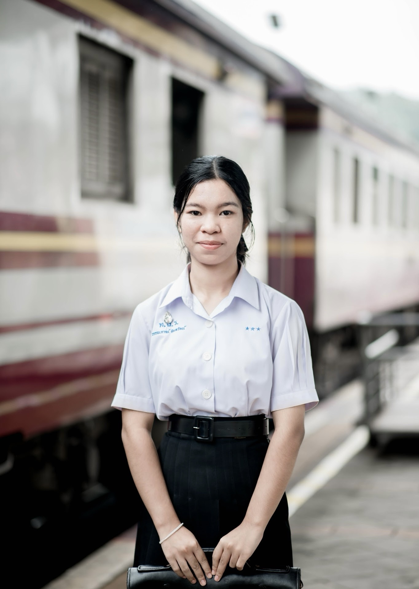

Web Development
การสร้างและออกแบบเว็บไซต์ ทั้งด้านโครงสร้าง รูปแบบ และการโต้ตอบกับผู้ใช้งาน
PERSONAL PORTFOLIO · 2026

สวัสดีค่ะ หนูชื่อวรรณภาณ์ อินทรัตน์ หรือหนึ่ง นักเรียนชั้นมัธยมศึกษาปีที่ 6 ที่มีความสนใจ ในด้านวิทยาการคอมพิวเตอร์ การเขียนโปรแกรม และการประยุกต์ใช้เทคโนโลยีเพื่อแก้ไขปัญหาในชีวิตจริง
 01 / NUENG
01 / NUENG
01 / ABOUT ME
“ความสำเร็จไม่ได้เริ่มจากการรู้ทุกอย่าง แต่เริ่มจากความกล้าที่จะเรียนรู้ในสิ่งที่ยังไม่รู้”
หนูเป็นคนที่ชอบตั้งคำถามและสนใจการทำงานของเทคโนโลยี โดยเฉพาะเว็บไซต์ โปรแกรม และระบบคอมพิวเตอร์ต่าง ๆ จุดเริ่มต้นของความสนใจเกิดจากความสงสัยว่า สิ่งที่เราใช้งานในชีวิตประจำวันถูกสร้างขึ้นมาได้อย่างไร
ความสนใจนี้ทำให้หนูเริ่มศึกษาการเขียนโปรแกรม ทดลองสร้างเว็บไซต์ และเรียนรู้การประยุกต์ใช้เทคโนโลยี ทั้งด้าน AI และ Cybersecurity ผ่านการทำกิจกรรม การแข่งขัน และการลงมือทำโปรเจกต์ด้วยตนเอง
หนูมองว่าการเขียนโปรแกรมไม่ได้เป็นเพียงการสั่งให้คอมพิวเตอร์ทำงาน แต่ยังเป็นการฝึกคิดอย่างมีเหตุผล วิเคราะห์ปัญหา ออกแบบวิธีแก้ไข และพัฒนาสิ่งที่เป็นประโยชน์ต่อผู้อื่น
แม้จะยังมีความรู้และประสบการณ์อีกหลายด้านที่ต้องพัฒนา แต่หนูพร้อมเรียนรู้จากข้อผิดพลาด เปิดรับสิ่งใหม่ และตั้งใจพัฒนาตัวเองให้เติบโตในเส้นทางวิทยาการคอมพิวเตอร์
02 / EDUCATION
ระดับมัธยมศึกษาตอนปลาย · แผนการเรียนวิทยาศาสตร์–คณิตศาสตร์
เป็นช่วงเวลาที่ได้เรียนรู้ทั้งด้านวิชาการและกิจกรรม ได้พัฒนาทักษะการคิดวิเคราะห์ ความรับผิดชอบ การทำงานร่วมกับผู้อื่น และค้นพบความสนใจด้านคอมพิวเตอร์
ระดับมัธยมศึกษาตอนปลาย (4 ภาคเรียน)
ระดับมัธยมศึกษาตอนปลาย (5 ภาคเรียน)
นักเรียนที่มีผลการเรียนระดับดีเยี่ยม ปีการศึกษา 2568 และรางวัลเด็กดีศรี ท.ฉ.ร.
03 / MY INSPIRATION
From curiosity to creativity.
สิ่งที่ทำให้หนูสนใจวิทยาการคอมพิวเตอร์ คือการได้เห็นว่าเทคโนโลยีสามารถเปลี่ยนแนวคิด ให้กลายเป็นสิ่งที่ใช้งานได้จริง ไม่ว่าจะเป็นเว็บไซต์ โปรแกรม หรือระบบอัจฉริยะ
จากการเรียนรู้ด้วยตนเองและการเข้าร่วมกิจกรรมด้านคอมพิวเตอร์ หนูได้พบว่าตัวเองสนุกกับการคิดวิเคราะห์ การทดลองเขียนโปรแกรม และการแก้ปัญหาที่มีความท้าทาย ประสบการณ์จากการแข่งขันและการพัฒนาโปรเจกต์ ทำให้หนูเข้าใจมากขึ้นว่าการสร้างเทคโนโลยี ต้องอาศัยทั้งความรู้ ความคิดสร้างสรรค์ และความพยายาม
หนูจึงต้องการศึกษาต่อในสาขาวิทยาการคอมพิวเตอร์ เพื่อพัฒนาความรู้ด้านการเขียนโปรแกรม อัลกอริทึม การออกแบบระบบ และเทคโนโลยีสมัยใหม่ รวมถึงนำความรู้ไปต่อยอดสร้างผลงาน ที่สามารถตอบโจทย์ความต้องการของผู้คนได้
หนูเชื่อว่ามหาวิทยาลัยจะเป็นพื้นที่สำคัญ ที่ทำให้ได้เรียนรู้จากอาจารย์ เพื่อน และประสบการณ์จริง เพื่อเติบโตเป็นคนที่มีความรู้และสามารถสร้างประโยชน์ ให้กับสังคมผ่านเทคโนโลยีในอนาคต
04 / MY TOOLKIT
สิ่งที่กำลังศึกษา ทดลอง และพัฒนาผ่านการเรียนรู้ด้วยตนเอง และประสบการณ์จากกิจกรรมต่าง ๆ
การสร้างและออกแบบเว็บไซต์ ทั้งด้านโครงสร้าง รูปแบบ และการโต้ตอบกับผู้ใช้งาน
การศึกษา AI การจำแนกภาพ การใช้ Dataset และการประยุกต์ใช้ AI ในการแก้ปัญหา
การเรียนรู้ความปลอดภัยของระบบ การค้นหาช่องโหว่ และการวิเคราะห์โจทย์ CTF
พื้นฐานระบบเครือข่าย การกำหนด IP การแบ่ง Subnet และการวิเคราะห์ Packet
การคิดเป็นขั้นตอน วิเคราะห์ปัญหา ทดลองวิธีแก้ไข และพัฒนาจากข้อผิดพลาด
การทำงานร่วมกับผู้อื่น การสื่อสาร การรับฟังความคิดเห็น และการเรียนรู้อย่างต่อเนื่อง
05 / SELECTED WORK
ผลงานที่เกิดจากการนำความรู้มาทดลอง และเปลี่ยนแนวคิดให้กลายเป็นโครงการที่มีเป้าหมายชัดเจน
Aegis เป็นแนวคิดการพัฒนาเว็บไซต์ที่นำเทคโนโลยี AI มาช่วยสนับสนุนการดูแลบาดแผลเบื้องต้น โดยมีเป้าหมายให้ผู้ใช้งานเข้าถึงข้อมูลและคำแนะนำ ได้สะดวกมากขึ้น
แนวคิดเกิดจากสถานการณ์ที่โรงพยาบาลมีผู้ป่วยจำนวนมาก บุคลากรทางการแพทย์มีภาระงานสูง และผู้ป่วยบางส่วนต้องรอรับบริการเป็นเวลานาน จึงเกิดคำถามว่าเราจะใช้เทคโนโลยีช่วยให้ผู้คน เข้าใจสถานการณ์และดูแลตนเองในเบื้องต้นได้อย่างไร
ระบบออกแบบให้ผู้ใช้งานกรอกข้อมูล เช่น อายุ อุณหภูมิ และอาการ พร้อมส่งภาพบาดแผล เพื่อใช้ประกอบการประเมินและแสดงคำแนะนำ โดยมีแนวคิดการแบ่งระดับความเร่งด่วน เพื่อช่วยให้ผู้ใช้งานตัดสินใจได้เหมาะสมขึ้น
 AEGIS / PROJECT CONCEPT
AEGIS / PROJECT CONCEPT
การเข้าถึงคำแนะนำเบื้องต้นและการดูแลบาดแผลในสถานการณ์ที่เข้าถึงบริการได้ยาก
ประยุกต์ใช้ AI และข้อมูลจากผู้ใช้งานเพื่อประกอบการให้คำแนะนำ
การออกแบบระบบ การคิดจากปัญหาจริง และการนำเทคโนโลยีมาประยุกต์ใช้
* Aegis เป็นแนวคิดเครื่องมือให้ข้อมูลเบื้องต้น ไม่ใช่เครื่องมือวินิจฉัยโรคหรือทดแทนแพทย์
โครงการศึกษาและออกแบบระบบเครือข่าย โดยเรียนรู้การวางโครงสร้างเครือข่าย และการเชื่อมต่ออุปกรณ์ต่าง ๆ ภายในระบบ
เนื้อหาครอบคลุมการกำหนด IP Address การคำนวณ Subnet Mask การใช้งาน Router และ Switch รวมถึงการกำหนด Default Gateway เพื่อให้การสื่อสารระหว่างอุปกรณ์ทำงานได้อย่างเหมาะสม
นอกจากนี้ยังได้เรียนรู้การตรวจสอบการเชื่อมต่อ ด้วยคำสั่ง Ping และการวิเคราะห์ Packet ผ่าน Wireshark รวมถึงศึกษาแนวคิดของ SMURF Attack เพื่อทำความเข้าใจภัยคุกคามทางเครือข่าย
 WILDNET METROPOLIS
WILDNET METROPOLIS
06 / EXPERIENCE
ทุกกิจกรรมเป็นโอกาสในการเรียนรู้ ฝึกทักษะ และค้นพบความสามารถของตัวเอง
เข้าร่วมการแข่งขันด้านความปลอดภัยไซเบอร์ ฝึกการวิเคราะห์โจทย์ Web Application และ Mobile Application ในรูปแบบ CTF
เรียนรู้แนวคิดด้านความปลอดภัยไซเบอร์และฝึกทักษะการแก้ปัญหาผ่านโจทย์การแข่งขัน
ค่ายด้านวิทยาการคอมพิวเตอร์ มหาวิทยาลัยเกษตรศาสตร์
ค่ายเยาวชนวิศวกรรมคอมพิวเตอร์ภาคฤดูร้อน มหาวิทยาลัยขอนแก่น
กิจกรรมการเรียนรู้ด้านหุ่นยนต์และการประยุกต์ใช้เทคโนโลยี
เข้าร่วมโครงการแนะแนวการศึกษาและเปิดมุมมองเกี่ยวกับการศึกษาต่อ
ฝึกทักษะการเขียนโปรแกรมและการแก้ไขปัญหาด้วยกระบวนการคิดอย่างเป็นระบบ
เรียนรู้การทำงานร่วมกันและประยุกต์ใช้ความรู้ด้านเทคโนโลยี
ฝึกความรู้ การคิดวิเคราะห์ และการแก้ปัญหาทางวิทยาศาสตร์
ได้รับรางวัลรองชนะเลิศอันดับ 2
ฝึกการเรียนรู้ร่วมกัน การแลกเปลี่ยนความรู้ และการช่วยเหลือกัน
เข้าร่วมกิจกรรมของโรงเรียนเพื่อส่งเสริมการใช้เวลาว่างอย่างสร้างสรรค์
ร่วมทำกิจกรรมกับเพื่อนและเรียนรู้การทำงานเป็นทีม
ร่วมเป็นฝ่ายศิลป์ สต๊าฟหลีด และถือ Backdrop
ร่วมสืบสานประเพณีทางพระพุทธศาสนาและเรียนรู้วัฒนธรรมไทย
เข้าร่วมกิจกรรมส่งเสริมคุณธรรมและการมีส่วนร่วมกับชุมชน
ฝึกความรับผิดชอบ การอยู่ร่วมกับผู้อื่น และการพัฒนาตนเอง
07 / RECOGNITION
รวบรวมรางวัล ใบประกาศนียบัตร และหลักฐานการเข้าร่วมกิจกรรม ที่สะท้อนถึงความตั้งใจในการเรียนรู้และพัฒนาตนเอง
การแข่งขันเขียนโปรแกรมด้วยภาษาคอมพิวเตอร์ งานศิลปหัตถกรรมนักเรียน ครั้งที่ 73
คลิกที่ภาพเพื่อดูใบประกาศนียบัตรขนาดใหญ่
08 / LOOKING FORWARD
The future belongs to those
who keep learning.
เป้าหมายของหนูคือการศึกษาต่อด้านวิทยาการคอมพิวเตอร์ เพื่อสร้างพื้นฐานที่แข็งแกร่งทั้งด้านการเขียนโปรแกรม การคิดเชิงคำนวณ การออกแบบระบบ และการประยุกต์ใช้เทคโนโลยี
ในอนาคตหนูอยากพัฒนาตัวเองให้สามารถสร้างโปรแกรม และระบบที่ตอบโจทย์ปัญหาจริงได้ รวมถึงเปิดโอกาสให้ตัวเองได้เรียนรู้เทคโนโลยีใหม่ ๆ และนำความรู้ไปสร้างประโยชน์ให้กับผู้อื่น
หนูอาจยังไม่ได้เก่งที่สุดในวันนี้ แต่พร้อมที่จะเรียนรู้ ทดลอง และพัฒนาตัวเองต่อไป เพราะทุกก้าวเล็ก ๆ คือส่วนหนึ่งของการเติบโต
09 / LET'S CONNECT
Thank you for taking the time to explore my portfolio. I hope to learn, grow and create something meaningful.
WANNAPA INTARAT · NUENG